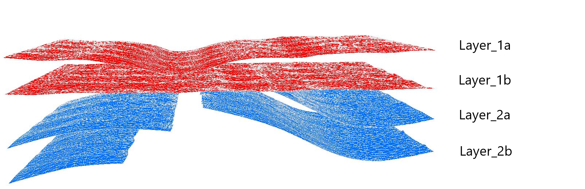
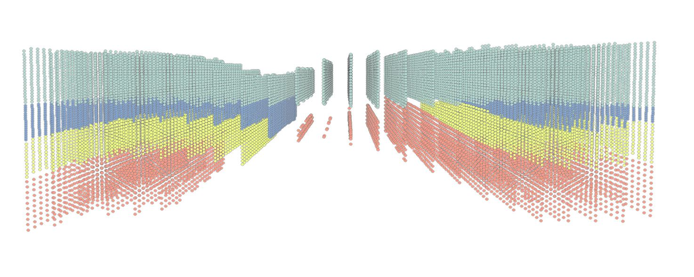
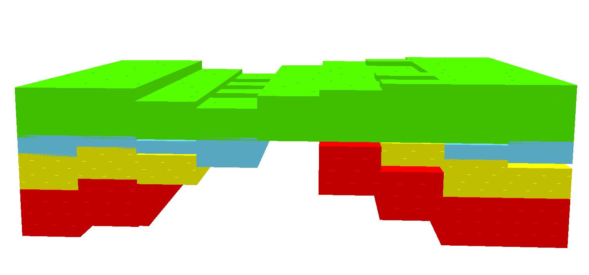
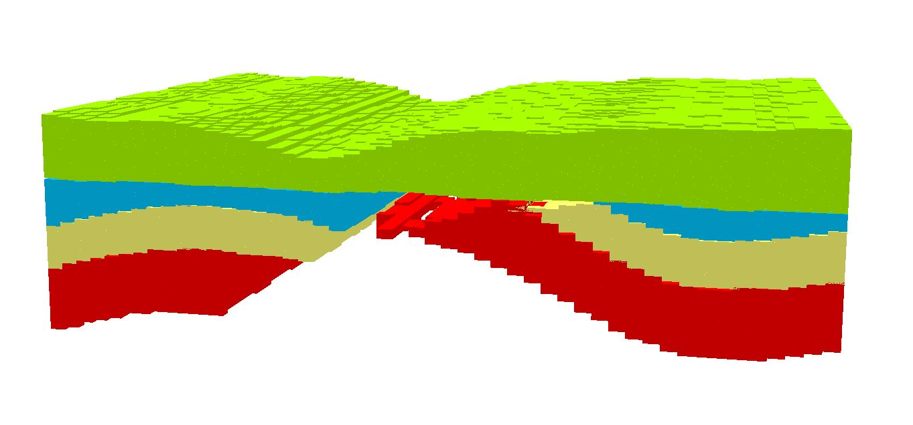

The ArcPy Script "Generate Voxel" allows for the creation of Voxel from ArcGIS Polygon layers. It accepts an unlimited amount of layers and creates a user-defined amount of Voxel between the top and bottom layers of a Stratum.
This image shows the naming conventions for the layers. The top-layer of a stratum has to be infront of the bottom-layer, alphabetically. For example, these input layers would create three sets of Voxel. One between the layers: Layer_1a & Layer_1b. One between the layers: Layer_1b & Layer_2a. And one between the layers: Layer_2a & Layer_2b.
This image shows an example of generated Voxel, displayed as points. 15625 (25 per axis) Voxel per Stratum have been created. These Voxel don't have the proper symbology yet. To fix this, follow the instructions in the log-file of the tool.
This image shows the Voxel with proper symbology. 1000 (10 per axis) Voxel per Stratum have been created.
This image also shows Voxel with proper symbology. 125,000 (50 per axis) Voxel per Stratum have been created.
Note: The run-time of this tool is greatly dependent on the number of Voxel to be created.